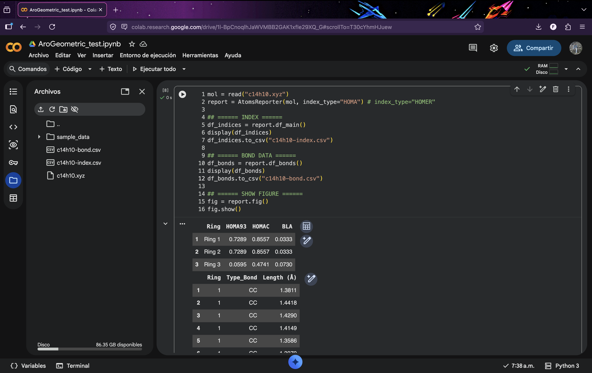
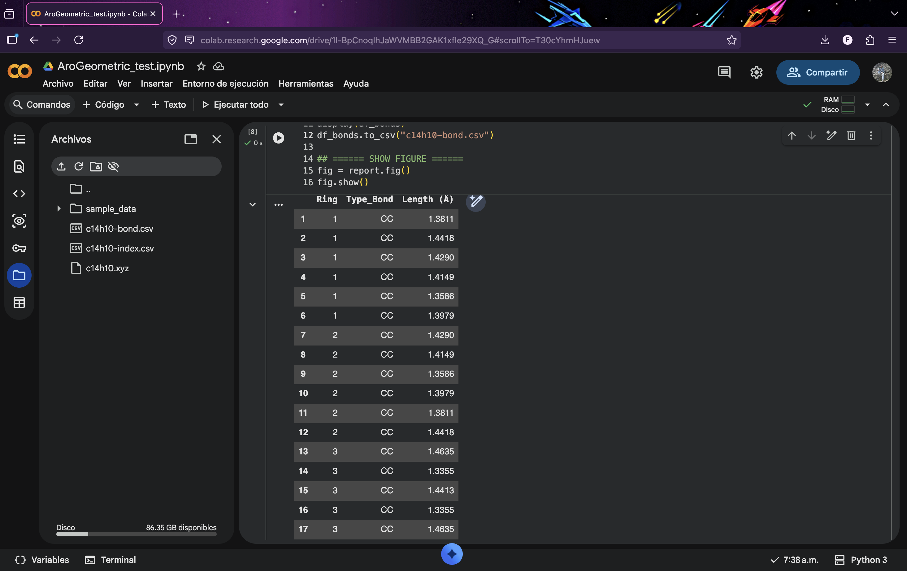
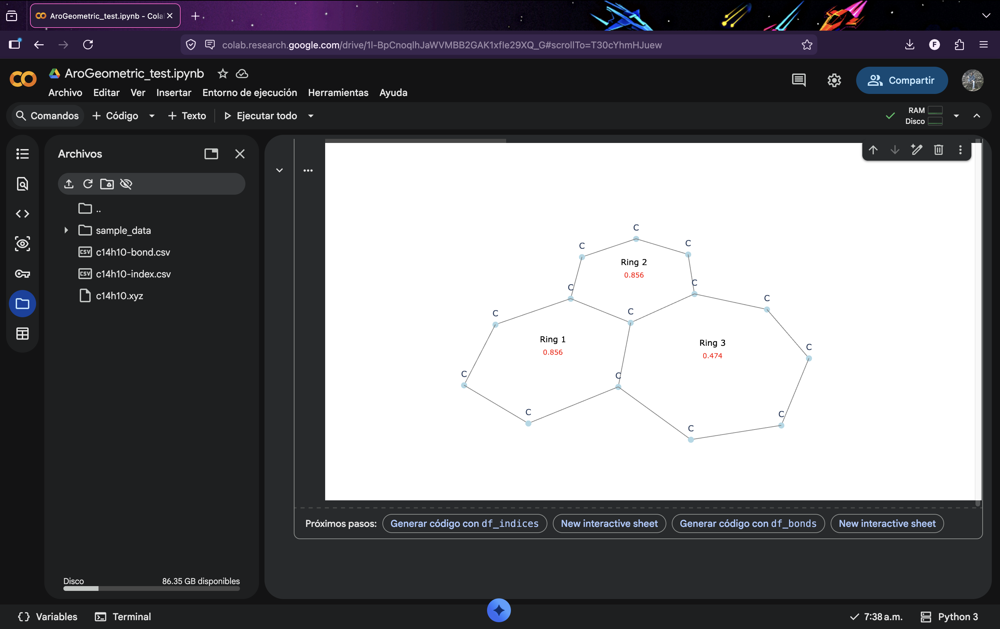

AroGeometric
AroGeometric is the AromaTools module for evaluating aromaticity using geometric descriptors derived from molecular structure.
The module provides an automated workflow for detecting molecular rings, evaluating bond-length equalization, and computing aromaticity indices commonly used in computational chemistry.
Overview
AroGeometric automatically:
- Detects molecular rings
- Constructs the molecular graph
- Computes bond distances
- Evaluates geometric aromaticity indices
- Generates tables with bond-length information
- Produces graphical representations of cyclic systems
Only molecular geometry is required as input.
Supported sources include:
- Gaussian output files
- ORCA output files
- XYZ files
- CML files
- other formats supported by ASE
Implemented indices
The following geometric descriptors are implemented:
- HOMA93
- HOMAc
- HOMER
- BLA (Bond Length Alternation)
These indices quantify aromaticity through the degree of bond-length equalization in cyclic systems.
Quick start
We recommend using this module in Google Colab:
https://colab.research.google.com/
Install ASE
!pip3 install ase
Import necessary libraries
from ase.io import read
from aromatools.arogeometric import AtomsReporter
Calculate the indices
mol = read("mol.xyz") # Your molecule in XYZ format or output file from Gaussian or ORCA
report = AtomsReporter(mol, index_type="HOMER") # Use "HOMA" or "HOMER"
# ====== INDICES ======
df_indices = report.df_main()
display(df_indices)
df_indices.to_csv("mol-indices.csv", index=False)
# ====== BOND DATA ======
df_bonds = report.df_bonds()
display(df_bonds)
df_bonds.to_csv("mol-bonds.csv", index=False)
# ====== SHOW FIGURE ======
fig = report.fig()
fig.show()
Workflow
The module follows these steps:
- Read molecular geometry.
- Build the molecular graph.
- Detect rings.
- Compute bond distances.
- Evaluate aromaticity indices.
- Generate visualization.
Graph construction is based on covalent radii.
Theoretical background
HOMA index
The harmonic oscillator model of aromaticity is defined as:
where:
- \(n\) is the number of bonds
- \(R_i\) is the bond length
- \(R_{opt}\) is the optimal aromatic bond length
- \(\alpha\) is a normalization constant
HOMA values close to 1 indicate aromatic character, values near 0 correspond to non-aromatic systems, and negative values indicate antiaromaticity.
Parameter sets
HOMA93 parameters
| Bond | Ropt (Å) | α (Å⁻²) |
|---|---|---|
| CC | 1.388 | 257.70 |
| CN | 1.334 | 93.52 |
| NN | 1.309 | 130.33 |
| CO | 1.265 | 157.38 |
Reference: HOMA article
HOMAc parameters (ground state S₀)
| Bond | Ropt (Å) | α (Å⁻²) |
|---|---|---|
| CC | 1.392 | 153.37 |
| CN | 1.333 | 111.83 |
| NN | 1.318 | 98.99 |
| CO | 1.315 | 335.16 |
Reference: HOMAc article
HOMER parameters (excited state T₁)
| Bond | Ropt (Å) | α (Å⁻²) |
|---|---|---|
| CC | 1.437 | 950.74 |
| CN | 1.390 | 506.43 |
| NN | 1.375 | 187.36 |
| CO | 1.379 | 164.96 |
Reference: HOMER article
Output
After executing the calculation, AroGeometric generates tabulated data and graphical representations that summarize the structural aromaticity analysis.
Generated data
Two main tables are produced.
Aromaticity indices
A table containing the evaluated geometric indices for each detected ring:
mol-indices.csv
This file typically includes:
- Ring identifier
- Index type
- If
index_type="HOMA", the program reports HOMA93, HOMAc and BLA - If
index_type="HOMER", the program reports HOMER and BLA
- If

Bond values
A table showing bond distances:
mol-bonds.csv
This file typically includes:
- Ring identifier
- Bond type
- Length (Å)

Graphical output
AroGeometric generates a graphical representation of the molecule highlighting cyclic structures:
fig = report.fig()
fig.show()

The figure shows:
- Molecular connectivity
- Detected rings
- Topology of the cyclic system
- Structural framework used for index evaluation
This visualization helps verify ring detection and provides an intuitive representation of the molecular structure.